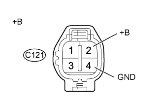

СИСТЕМА ECD (для моделей с DPF) > Цепь форсунки |
| 1.ПРОВЕРЬТЕ ЭЛЕКТРОННЫЙ БЛОК ПРИВОДА ФОРСУНОК (ПИТАНИЕ) |
|  |
Отсоедините разъемы электронных блоков привода форсунок.
Измерьте напряжение в соответствии со значениями, приведенными в таблице.
| Контакты для подключения диагностического прибора | Положение переключателя | Заданные условия |
| C121-2 (+B) - C121-4 (GND) | Выключатель зажигания в состоянии ON (ВКЛ) (IG) | 11 - 14 В |
| *a | Вид спереди разъема со стороны жгута проводов: (к электронному блоку привода форсунок) |
Подсоедините разъемы электронных блоков привода форсунок.
|
| ||||
| OK | ||
| ||
| 2.ПРОВЕРЬТЕ РЕЛЕ EDU |
Проверьте реле EDU (Нажмите здесь).
|
| ||||
| OK | |
| 3.ПРОВЕРЬТЕ ЖГУТ ПРОВОДОВ И РАЗЪЕМ (РЕЛЕ EDU – ЭЛЕКТРОННЫЙ БЛОК ПРИВОДА ФОРСУНОК) |
Извлеките реле EDU из блока реле моторного отсека.
Отсоедините разъем электронного блока привода форсунок.
Измерьте сопротивление в соответствии со значениями, приведенными в таблице ниже.
| Контакты для подключения диагностического прибора | Состояние | Заданные условия |
| C121-2 (+B) - контакт 3 реле EDU | Всегда | Менее 1 Ом |
| C121-4 (GND) - масса | Всегда | Менее 1 Ом |
| Контакты для подключения диагностического прибора | Состояние | Заданные условия |
| C121-2 (+B) или контакт 3 реле EDU - масса | Всегда | 10 кОм или более |
Подсоедините разъем электронного блока привода форсунок.
Установите реле EDU на место.
|
| ||||
| OK | |
| 4.ПРОВЕРЬТЕ ЖГУТ ПРОВОДОВ И РАЗЪЕМ (РЕЛЕ EDU – ИНТЕГРИРОВАННОЕ РЕЛЕ № 1, АККУМУЛЯТОРНАЯ БАТАРЕЯ) |
Извлеките реле EDU из блока реле моторного отсека.
Извлеките интегрированное реле № 1 из блока реле моторного отсека.
Измерьте сопротивление в соответствии со значениями, приведенными в таблице ниже.
| Контакты для подключения диагностического прибора | Состояние | Заданные условия |
| Контакт 3 реле EDU - 1B-5 | Всегда | Менее 1 Ом |
| Контакт 5 реле EDU - положительный (+) вывод аккумуляторной батареи | Всегда | Менее 1 Ом |
| Контакты для подключения диагностического прибора | Состояние | Заданные условия |
| Контакт 3 реле EDU или 1B-5 - масса | Всегда | 10 кОм или более |
| Контакт 5 реле EDU или положительный (+) вывод аккумуляторной батареи - масса | Всегда | 10 кОм или более |
Установите реле EDU на место.
Установите интегрированное реле № 1.
|
| ||||
| OK | |
| 5.ПРОВЕРЬТЕ ИНТЕГРИРОВАННОЕ РЕЛЕ № 1 (EFI) |
Проверьте интегрированное реле № 1 (EFI) (Нажмите здесь).
|
| ||||
| OK | |
| 6.ПРОВЕРЬТЕ ЖГУТ ПРОВОДОВ И РАЗЪЕМ (РЕЛЕ EDU - ЕСМ) |
Извлеките реле EDU из блока реле моторного отсека.
Отсоедините разъем ЭБУ.
Измерьте сопротивление в соответствии со значениями, приведенными в таблице ниже.
| Контакты для подключения диагностического прибора | Условие | Заданные условия |
| G58-12 (IREL) - контакт 2 реле EDU | Всегда | Менее 1 Ом |
| Контакты для подключения диагностического прибора | Условие | Заданные условия |
| G58-12 (IREL) или контакт 2 реле EDU - масса | Всегда | 10 кОм или более |
Подсоедините разъем ECM.
Установите реле EDU на место.
|
| ||||
| OK | ||
| ||